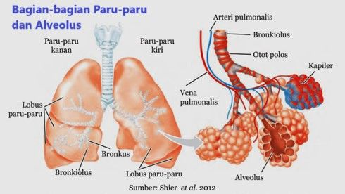

ANATOMI PARU-PARU
a. Pengertian Paru-Paru sebagai Organ Ekskresi
Paru-paru (Pulmo) adalah organ utama dalam sistem pernapasan. Namun, selain sebagai alat pernapasan, paru-paru juga berfungsi sebagai organ ekskresi. Artinya, paru-paru bertugas mengeluarkan zat-zat sisa hasil metabolisme dari dalam tubuh.
Zat sisa yang dikeluarkan oleh paru-paru adalah:
- Karbon Dioksida (CO₂) - hasil pembakaran (oksidasi) makanan di dalam sel.
- Uap Air (H₂O) - kelebihan air hasil metabolisme.
b. Letak dan Ukuran Paru-Paru
- Letak: Paru-paru terletak di dalam rongga dada (toraks), di kanan dan kiri jantung. Mereka dilindungi oleh tulang rusuk.
- Jumlah: Manusia memiliki sepasang paru-paru, yaitu:
- Paru-paru Kanan: Lebih besar dan terdiri dari 3 lobus (gelambir): lobus superior, medial, dan inferior.
- Paru-paru Kiri: Lebih kecil (karena ada ruang untuk jantung) dan terdiri dari 2 lobus: lobus superior dan inferior.
- Selaput Pembungkus: Paru-paru dibungkus oleh selaput tipis yang disebut pleura. Selaput ini menghasilkan cairan pleura yang berfungsi untuk melindungi paru-paru dari gesekan saat mengembang dan mengempis.
c. Struktur Mikroskopis:
Alveolus Paru-paru bukan hanya kantung besar, tetapi tersusun dari struktur-struktur kecil yang sangat penting.
- Trakea (Batang Tenggorokan): Saluran utama yang membawa udara dari hidung/mulut menuju paru-paru.
- Bronkus: Percabangan trakea yang menuju ke paru-paru kanan dan kiri.
- Bronkiolus: Percabangan dari bronkus yang lebih halus dan kecil seperti ranting.
- Alveolus (Alveoli):
- Ini adalah unit fungsional paru-paru sebagai organ ekskresi.
- Alveolus adalah kantung-kantung kecil berdinding tipis menyerupai anggur atau busa.
- Dinding alveolus sangat tipis (hanya setebal satu sel) dan dikelilingi oleh pembuluh kapiler darah.
- Jumlah alveolus sangat banyak (sekitar 300-500 juta) sehingga luas permukaannya mencapai 100 m² (sekitar 50 kali luas permukaan kulit kita!).

gambar: bagian paru-paru
sumber:https://kr.pinterest.com/pin/827255025303430127/
Mekanisme (Fisiologi) Ekskresi Paru-Paru
a. Prinsip Dasar: Difusi Gas
Proses ekskresi di paru-paru terjadi melalui mekanisme difusi. Difusi adalah perpindahan zat dari area berkonsentrasi tinggi ke area berkonsentrasi rendah. Di dalam alveolus, terjadi peristiwa ajaib yang disebut pertukaran gas.
b. Proses Ekskresi Karbon Dioksida (CO₂) dan Uap Air (H₂O)
Proses ini melibatkan aliran darah dan pernapasan. Berikut adalah tahapannya:
- Seluruh sel di tubuh kita melakukan metabolisme. Hasilnya adalah energi (ATP) dan sisa berupa CO₂ dan H₂O.
- CO₂ dan H₂O ini masuk ke dalam darah dan diangkut menuju jantung, lalu dipompa ke paru-paru.
- Sampah Masuk ke Alveolus:
- Di paru-paru, darah yang kaya CO₂ (berwarna merah gelap) mengalir di kapiler yang mengelilingi alveolus.
- Karena konsentrasi CO₂ di dalam darah tinggi, sementara di dalam alveolus rendah (karena kita baru menarik napas yang berisi O₂), maka CO₂ berdifusi menembus dinding kapiler dan dinding alveolus masuk ke dalam rongga alveolus.
- Bersamaan dengan CO₂, uap air (H₂O) juga ikut dikeluarkan dari darah ke alveolus.
- Saat kita menghembuskan napas (ekspirasi), CO₂ dan uap air yang sudah berada di alveolus akan terdorong keluar melalui bronkiolus, bronkus, trakea, dan akhirnya keluar dari hidung/mulut.
Rumus Sederhananya:
O₂ (dari luar) <--> Darah <--> CO₂ + H₂O (dari tubuh)
(Oksigen masuk, Karbondioksida dan Uap Air keluar)
untuk lebih memahami simak video berikut ini dengan mengklik link berikut:
link: https://youtu.be/lH1AFTkRJQI